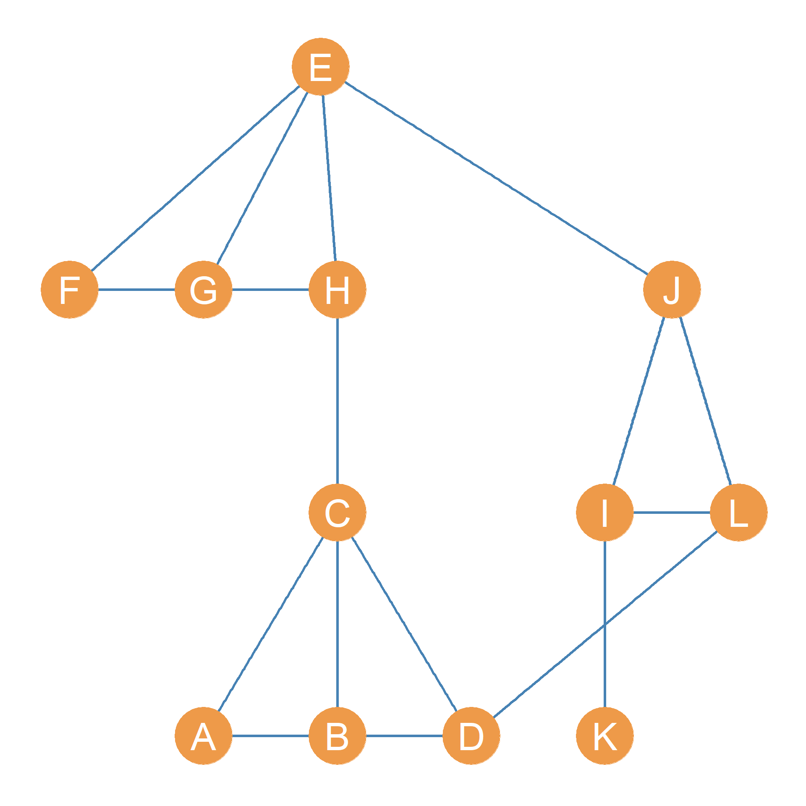
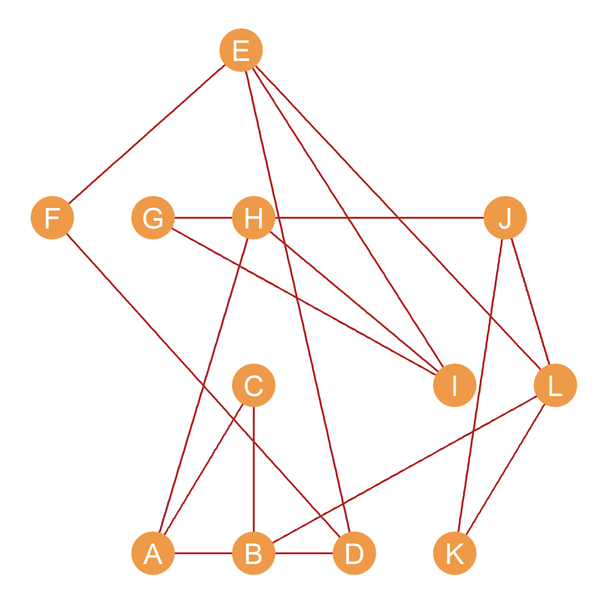
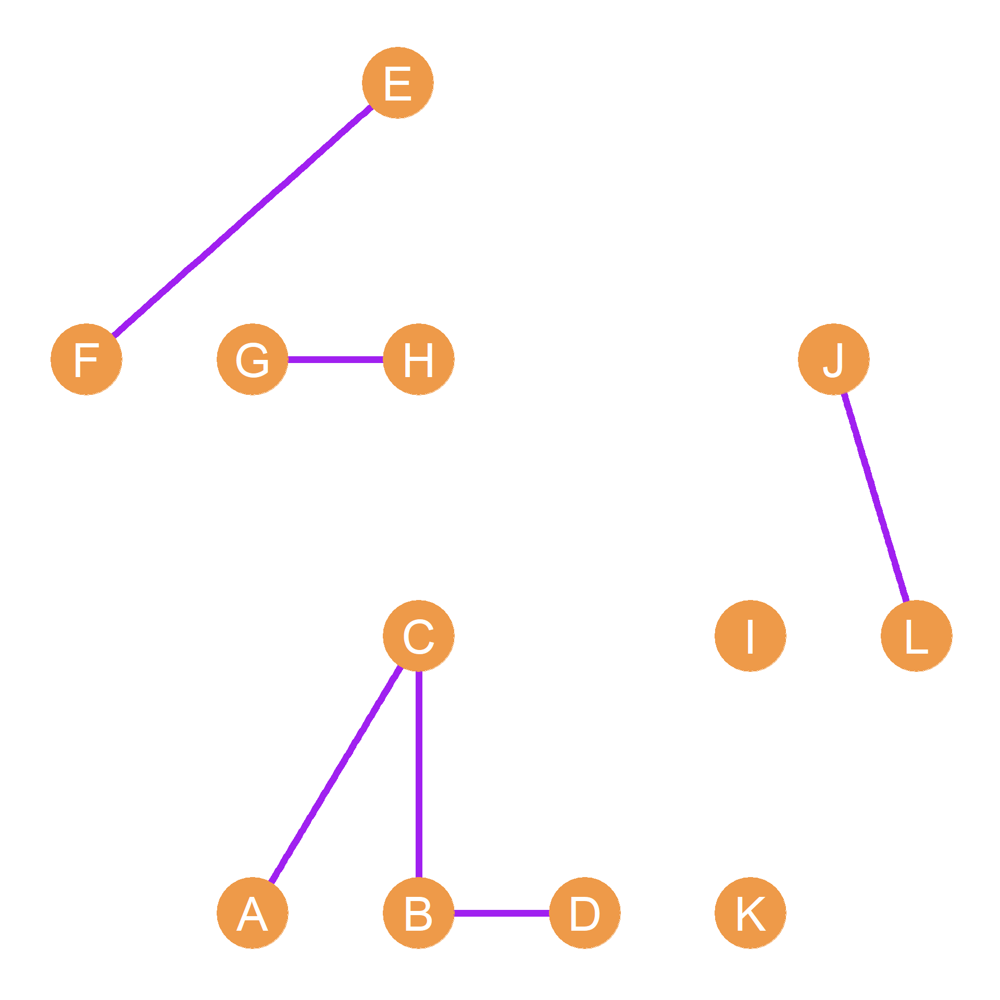
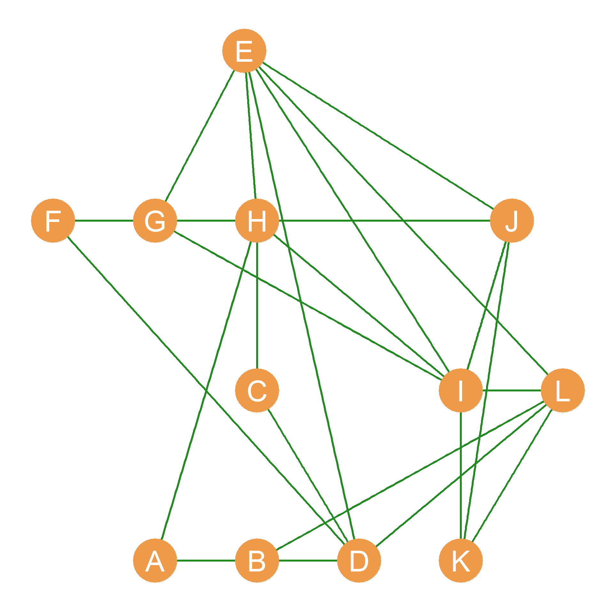

15 Basic Matrix Operations
Since matrices are just array of numbers one powerful thing that we can do is arithmetic and algebraic operations on them. These including summing, multiplying, taking powers of matrices and so forth. In this lesson, we discuss some basic matrix operations and their relevance for the analysis of social networks.
Our running example will be the pair of graphs shown in Figure 15.1. Suppose this is a network of twelve people who work at a (very) small company. We have recorded two types of relationships for each pair of persons: Whether they hang out together after work, and whether they get assigned to work together in team projects (we will call these “hang out” and “co-working” relations for short).
Figure 15.1 (a), composed of nodes joined by blue edges, represents hanging out relations; Figure 15.1 (b) represents co-working relations. The corresponding adjacency matrices for the Figure 15.1 networks are shown in Table 15.1. Table 15.1 (a) (let’s call it \(\mathbf{H}\)) records hanging out relations and Table 15.1 (b) (let’s call it \(\mathbf{C}\)) records co-working relations.




Table 15.1: Adjancency matrices corresponding to networks defined by different relationships.
| A | B | C | D | E | F | G | H | I | J | K | L | |
|---|---|---|---|---|---|---|---|---|---|---|---|---|
| A | -- | 0 | 1 | 1 | 0 | 0 | 0 | 0 | 0 | 0 | 0 | 0 |
| B | 0 | -- | 1 | 1 | 0 | 0 | 0 | 0 | 0 | 0 | 0 | 0 |
| C | 1 | 1 | -- | 1 | 0 | 0 | 0 | 1 | 0 | 0 | 0 | 0 |
| D | 1 | 1 | 1 | -- | 0 | 0 | 0 | 0 | 0 | 0 | 0 | 1 |
| E | 0 | 0 | 0 | 0 | -- | 1 | 1 | 1 | 0 | 1 | 0 | 0 |
| F | 0 | 0 | 0 | 0 | 1 | -- | 1 | 1 | 0 | 0 | 0 | 0 |
| G | 0 | 0 | 0 | 0 | 1 | 1 | -- | 1 | 0 | 0 | 0 | 0 |
| H | 0 | 0 | 1 | 0 | 1 | 1 | 1 | -- | 0 | 0 | 0 | 0 |
| I | 0 | 0 | 0 | 0 | 0 | 0 | 0 | 0 | -- | 1 | 1 | 1 |
| J | 0 | 0 | 0 | 0 | 1 | 0 | 0 | 0 | 1 | -- | 0 | 1 |
| K | 0 | 0 | 0 | 0 | 0 | 0 | 0 | 0 | 1 | 0 | -- | 0 |
| L | 0 | 0 | 0 | 1 | 0 | 0 | 0 | 0 | 1 | 1 | 0 | -- |
| A | B | C | D | E | F | G | H | I | J | K | L | |
|---|---|---|---|---|---|---|---|---|---|---|---|---|
| A | -- | 1 | 1 | 0 | 0 | 0 | 0 | 1 | 0 | 0 | 0 | 0 |
| B | 1 | -- | 1 | 1 | 0 | 0 | 0 | 0 | 0 | 0 | 0 | 1 |
| C | 1 | 1 | -- | 0 | 0 | 0 | 0 | 0 | 0 | 0 | 0 | 0 |
| D | 0 | 1 | 0 | -- | 1 | 1 | 0 | 0 | 0 | 0 | 0 | 0 |
| E | 0 | 0 | 0 | 1 | -- | 1 | 0 | 0 | 1 | 0 | 0 | 1 |
| F | 0 | 0 | 0 | 1 | 1 | -- | 0 | 0 | 0 | 0 | 0 | 0 |
| G | 0 | 0 | 0 | 0 | 0 | 0 | -- | 1 | 1 | 1 | 0 | 0 |
| H | 1 | 0 | 0 | 0 | 0 | 0 | 1 | -- | 1 | 0 | 0 | 0 |
| I | 0 | 0 | 0 | 0 | 1 | 0 | 1 | 1 | -- | 0 | 0 | 0 |
| J | 0 | 0 | 0 | 0 | 0 | 0 | 1 | 0 | 0 | -- | 1 | 1 |
| K | 0 | 0 | 0 | 0 | 0 | 0 | 0 | 0 | 0 | 1 | -- | 1 |
| L | 0 | 1 | 0 | 0 | 1 | 0 | 0 | 0 | 0 | 1 | 1 | -- |
15.1 Matrix Addition and Subtraction
Perhaps the simplest operation we can do with two matrices is add them up. To add two matrices, we simply add up the corresponding entries in each cell. In matrix notation:
\[ \mathbf{H} + \mathbf{C} = h_{ij} + c_{ij} \tag{15.1}\]
Where \(h_{ij}\) is the corresponding entry for nodes i and j in the hanging out adjacency matrix \(\mathbf{H}\), and \(c_{ij}\) is the same entry in the co-working adjacency matrix \(\mathbf{C}\).
Why would we want to do this? Well, if we were studying the network shown in Figure 15.1, we might be interested in which dyads have uniplex (or single-stranded) relations, and which ones have multiplex (or multi-stranded) relations. That is, while some actors in the network either hang out together or work together, some of the do both. Adding up the adjacency matrices shown in Table 15.1, will tell us who these are. The result is shown in Table 15.2.
| A | B | C | D | E | F | G | H | I | J | K | L | |
|---|---|---|---|---|---|---|---|---|---|---|---|---|
| A | -- | 1 | 2 | 1 | 0 | 0 | 0 | 1 | 0 | 0 | 0 | 0 |
| B | 1 | -- | 2 | 2 | 0 | 0 | 0 | 0 | 0 | 0 | 0 | 1 |
| C | 2 | 2 | -- | 1 | 0 | 0 | 0 | 1 | 0 | 0 | 0 | 0 |
| D | 1 | 2 | 1 | -- | 1 | 1 | 0 | 0 | 0 | 0 | 0 | 1 |
| E | 0 | 0 | 0 | 1 | -- | 2 | 1 | 1 | 1 | 1 | 0 | 1 |
| F | 0 | 0 | 0 | 1 | 2 | -- | 1 | 1 | 0 | 0 | 0 | 0 |
| G | 0 | 0 | 0 | 0 | 1 | 1 | -- | 2 | 1 | 1 | 0 | 0 |
| H | 1 | 0 | 1 | 0 | 1 | 1 | 2 | -- | 1 | 0 | 0 | 0 |
| I | 0 | 0 | 0 | 0 | 1 | 0 | 1 | 1 | -- | 1 | 1 | 1 |
| J | 0 | 0 | 0 | 0 | 1 | 0 | 1 | 0 | 1 | -- | 1 | 2 |
| K | 0 | 0 | 0 | 0 | 0 | 0 | 0 | 0 | 1 | 1 | -- | 1 |
| L | 0 | 1 | 0 | 1 | 1 | 0 | 0 | 0 | 1 | 2 | 1 | -- |
Table 15.2 shows that the \(BC\) dyad has a multiplex relation (there is a “2” in the corresponding cell entry) and so does the \(AC\), \(FH\), \(GH\), \(EF\), and \(JL\) dyads. A graph shown the nodes linked only by multiplex relations (hanging out and co-working) is shown in Figure 15.1 (c).
Note that matrix subtraction works the same way:
\[ \mathbf{H} - \mathbf{C} = h_{ij} - c_{ij} \tag{15.2}\]
To subtract two matrices, we simply subtract the corresponding entries in each cell. Why would we ever want to do this? Perhaps we could be interested in those dyads in the network that are connected by a single, special purpose uniplex ties while disregarding both the disconnected and multiplex connected dyads.
| A | B | C | D | E | F | G | H | I | J | K | L | |
|---|---|---|---|---|---|---|---|---|---|---|---|---|
| A | -- | 1 | 0 | 1 | 0 | 0 | 0 | 1 | 0 | 0 | 0 | 0 |
| B | 1 | -- | 0 | 0 | 0 | 0 | 0 | 0 | 0 | 0 | 0 | 1 |
| C | 0 | 0 | -- | 1 | 0 | 0 | 0 | 1 | 0 | 0 | 0 | 0 |
| D | 1 | 0 | 1 | -- | 1 | 1 | 0 | 0 | 0 | 0 | 0 | 1 |
| E | 0 | 0 | 0 | 1 | -- | 0 | 1 | 1 | 1 | 1 | 0 | 1 |
| F | 0 | 0 | 0 | 1 | 0 | -- | 1 | 1 | 0 | 0 | 0 | 0 |
| G | 0 | 0 | 0 | 0 | 1 | 1 | -- | 0 | 1 | 1 | 0 | 0 |
| H | 1 | 0 | 1 | 0 | 1 | 1 | 0 | -- | 1 | 0 | 0 | 0 |
| I | 0 | 0 | 0 | 0 | 1 | 0 | 1 | 1 | -- | 1 | 1 | 1 |
| J | 0 | 0 | 0 | 0 | 1 | 0 | 1 | 0 | 1 | -- | 1 | 0 |
| K | 0 | 0 | 0 | 0 | 0 | 0 | 0 | 0 | 1 | 1 | -- | 1 |
| L | 0 | 1 | 0 | 1 | 1 | 0 | 0 | 0 | 1 | 0 | 1 | -- |
In which case, subtracting the two matrices, and then taking the absolute value of each of the cell entries (e.g., turning negative entries into positive ones), written \(|h_{ij} - c_{ij}|\) will result in a binary matrix that will only contain ones for people who are either hangout buddies or workmates but not both. Such a marix is shown in Table 15.3 and corresponding to the graph shown in Figure 15.1 (d).
15.2 The Matrix Dot Product
Another way of figuring out which pairs of people in a network have multiplex ties is to compute the matrix dot product (symbol: \(\cdot\)), sometimes this is also called the Hadamard product named after French mathematician Jacques Hadarmard, (symbol: \(\circ\)). Just like matrix addition, we find the matrix dot product by multiplying the corresponding entries in each of the matrices. In matrix format:
\[ \mathbf{H} \circ \mathbf{C} = h_{ij} \times c_{ij} \tag{15.3}\]
If we take the dot product of two adjacency matrices like \(\mathbf{H}\) and \(\mathbf{C}\), then the resulting matrix will have a one in a given cell only if \(h_{ij} = 1\) and \(c_{ij} = 1\). Otherwise, it will have a zero. This means that the dot product of two adjacency matrices will retain only the multiplex ties and erase all the other ones. The result of the dot products of the adjacency matrices shown in Table 15.1 is shown in Table 15.4.
| A | B | C | D | E | F | G | H | I | J | K | L | |
|---|---|---|---|---|---|---|---|---|---|---|---|---|
| A | -- | 0 | 1 | 0 | 0 | 0 | 0 | 0 | 0 | 0 | 0 | 0 |
| B | 0 | -- | 1 | 1 | 0 | 0 | 0 | 0 | 0 | 0 | 0 | 0 |
| C | 1 | 1 | -- | 0 | 0 | 0 | 0 | 0 | 0 | 0 | 0 | 0 |
| D | 0 | 1 | 0 | -- | 0 | 0 | 0 | 0 | 0 | 0 | 0 | 0 |
| E | 0 | 0 | 0 | 0 | -- | 1 | 0 | 0 | 0 | 0 | 0 | 0 |
| F | 0 | 0 | 0 | 0 | 1 | -- | 0 | 0 | 0 | 0 | 0 | 0 |
| G | 0 | 0 | 0 | 0 | 0 | 0 | -- | 1 | 0 | 0 | 0 | 0 |
| H | 0 | 0 | 0 | 0 | 0 | 0 | 1 | -- | 0 | 0 | 0 | 0 |
| I | 0 | 0 | 0 | 0 | 0 | 0 | 0 | 0 | -- | 0 | 0 | 0 |
| J | 0 | 0 | 0 | 0 | 0 | 0 | 0 | 0 | 0 | -- | 0 | 1 |
| K | 0 | 0 | 0 | 0 | 0 | 0 | 0 | 0 | 0 | 0 | -- | 0 |
| L | 0 | 0 | 0 | 0 | 0 | 0 | 0 | 0 | 0 | 1 | 0 | -- |
As we can see, the only dyads that have non-zero entries in Table 15.4 are the multiplex dyads in Table 15.2. The resulting network, composed of the combined “hanging + co-working” relation is shown in Figure 15.1 (c). Note that this network is much more sparse than either of the other two, since there’s an edge between nodes only when they are adjacent in both the Figure 15.1 (a) and Figure 15.1 (b) networks.
15.3 The Matrix Transpose
One thing we can do with a matrix is “turn it 90 degrees” so that the rows of the new matrix are equal to the columns of the resulting matrix and the columns of the first matrix equal the rows of the resulting matrix. This is called the matrix transpose (symbol: \(^T\)).
For instance, if we have a matrix \(\mathbf{A}_{4 \times 5}\) of dimensions \(4 \times 5\) (four rows and five columns), then the transpose \(A^T_{5 \times 4}\) will have five rows and four columns, with the respective entries in each matrix given by the formula:
\[ a_{ij} = a^T_{ji} \] That is the number that in the first matrix appears in the \(i^{th}\) row and \(j^{th}\) column now appears in the transposed version of the matrix in the \(j^{th}\) row and \(i^{th}\) column.
An example of a matrix and its tranpose is shown in Table 16.1.
Table 15.5: A matrix and its transpose
| 3 | 4 | 5 |
| 7 | 9 | 3 |
| 4 | 6 | 2 |
| 5 | 3 | 4 |
| 2 | 5 | 4 |
| 3 | 7 | 4 | 5 | 2 |
| 4 | 9 | 6 | 3 | 5 |
| 5 | 3 | 2 | 4 | 4 |
So let’s check out how the transpose works. The original matrix in Table 16.1 (a) has five rows and three columns. The transposed matrix has three rows and five columns. We can find the same numbers in the original and transposed matrices by switching the rows and columns. Thus, in the original matrix, the number in third row and second column is a six (\(a_{32} = 6\)). In the transposed version of the matrix, that same six is in second row and third column (\(a^T_{23} = 6\)). If you check, you’ll see that’s the case for each number! Thus, the transposed version of a matrix has the same information as the original, it is just that the rows and columns are switched. While this might seem like a totally useless thing to do (or learn) at the moment, we will see in Chapter 22 that the matrix transpose comes in very handy in the analysis of social networks, and particular in the analysis of two mode networks and cliques.